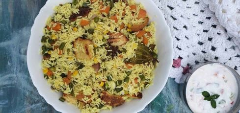

Small cravings! Let's make Rice
Here are the ingredients that you need to make Rice (for two people)
- Rice = 1 regular bowl
- Oil or ghee(saturated butter) = 2 serving spoon
- cumin seeds = 2 teaspoon
- salt = as per taste
- onion = 1 medium size (chopped)
- peas = 1 scoop
- soya chunks = 1 small bowl (soak in water for 10 minutes)
Let's start the preparation.
- Take a big pan with the capacity of minimum 3 litres.
- Turn on the stove. Keep at high.
- Add oil or ghee in the pan until it becomes hot.
- Keep the stove at medium to high temprature.
- Add cumin seeds followed by chopped onion immediately.
- Add salt and saute it until onion turns golden brown
-
Add peas, soya chunks, Rice and 2 bowls of water (use the bowl used to
measure Rice)
-
Cover the Pan and wait until the water is soaked. Check the rice after
every 10 minutes during cooking.
-
Once the water is completely soaked remove the pan from the stove. Turn
off the stove. Wait for 10-15 minutes. Enjoy the meal. It can also be
served with curd.
